Disfruta de deliciosos platillos preparados para compartir momentos especiales
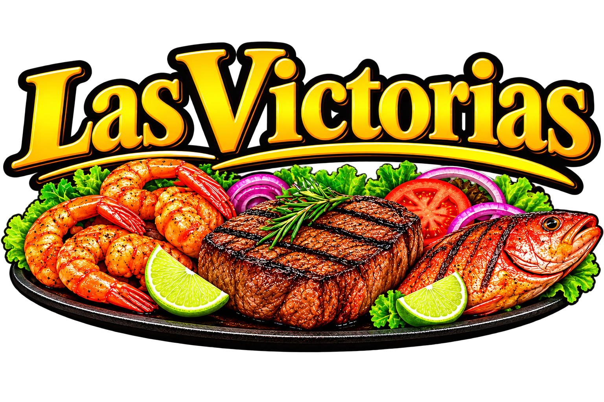
Disfruta de nuestras especialidades con el sabor del mar
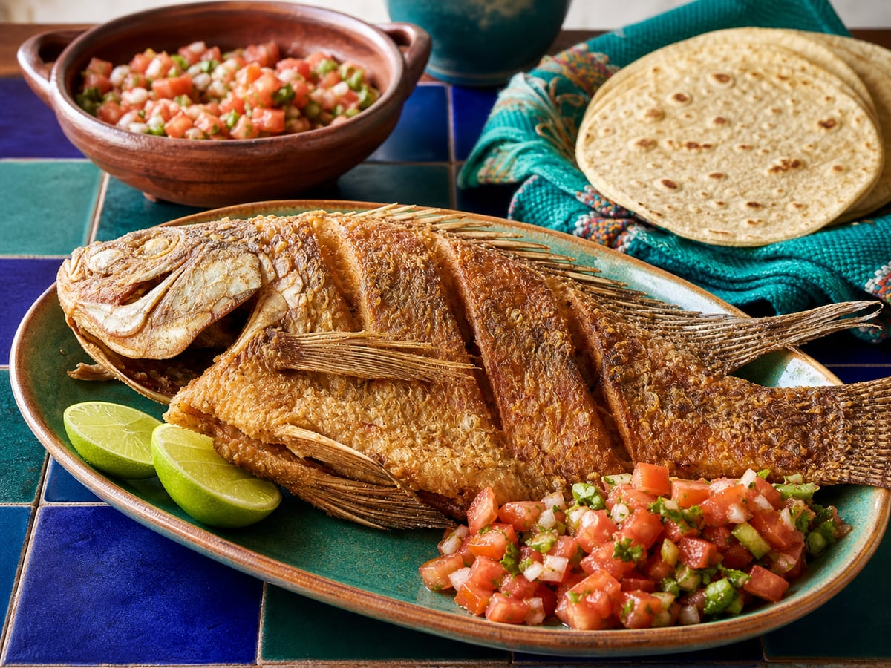
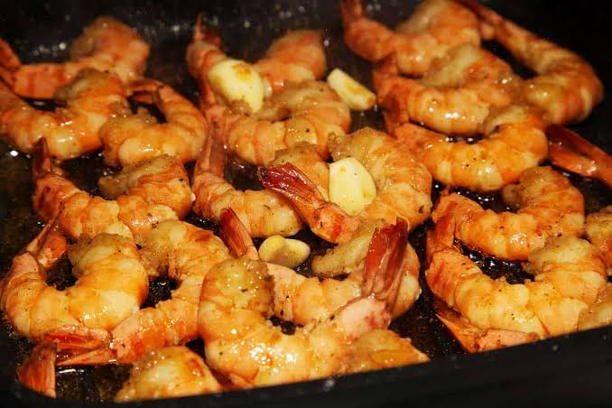
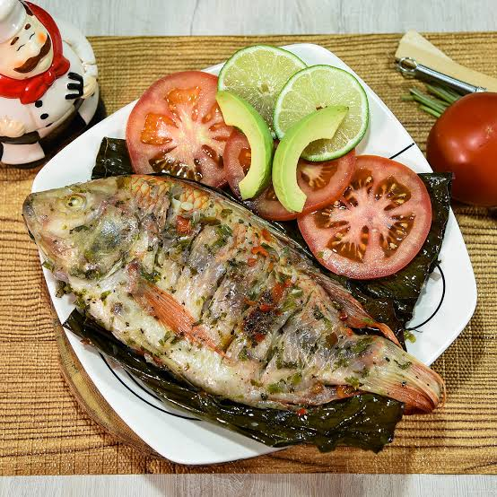
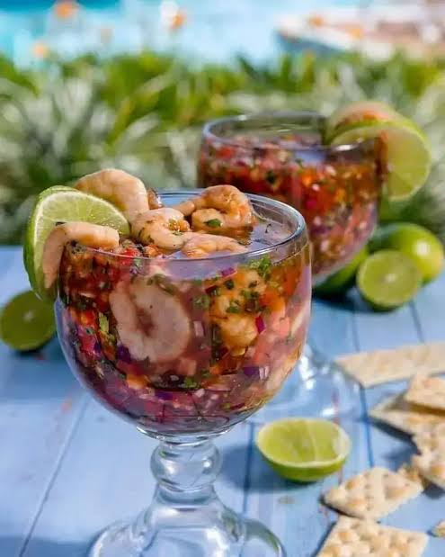
Disfruta de nuestras especialidades del sabor de la tierra
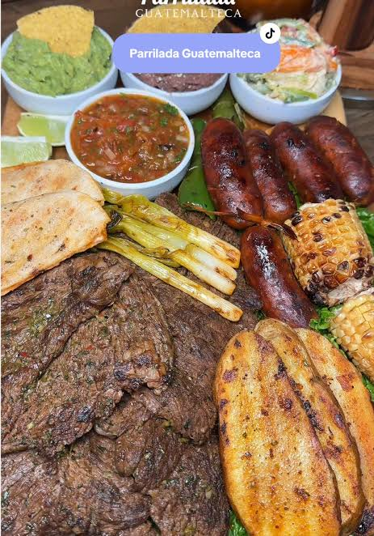
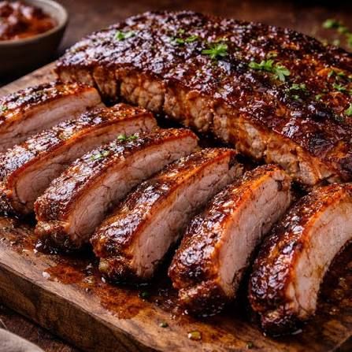
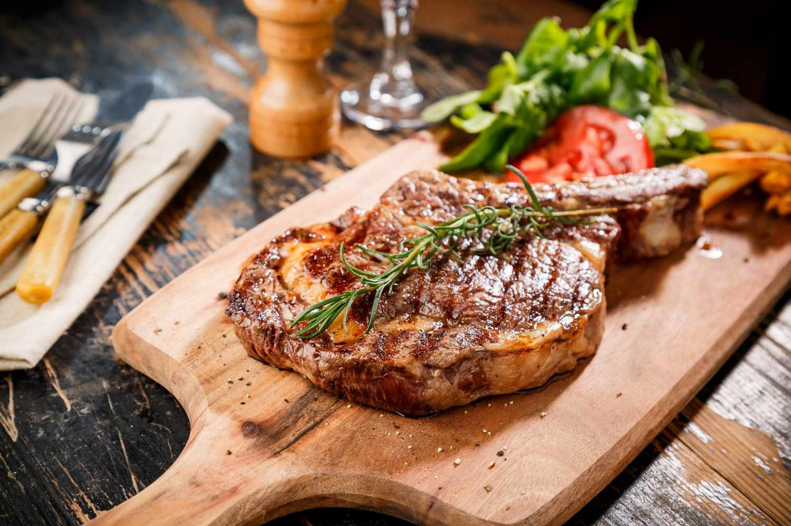
Nuestras boquitas especiales para acompanar tus bebidas favoritas!
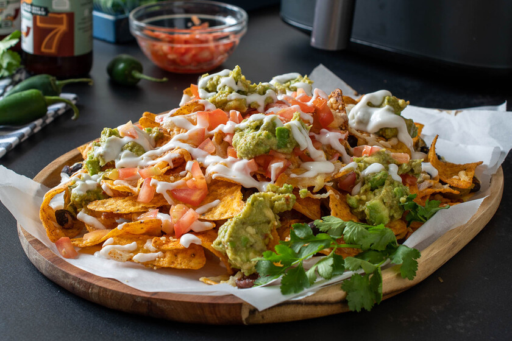
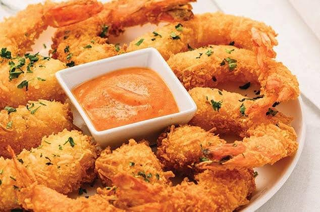
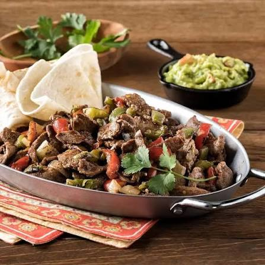
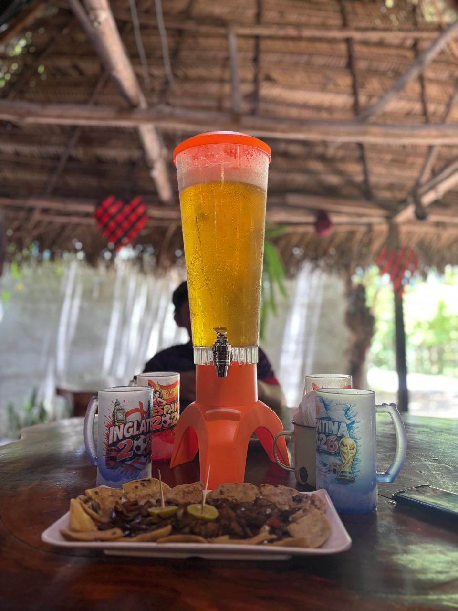